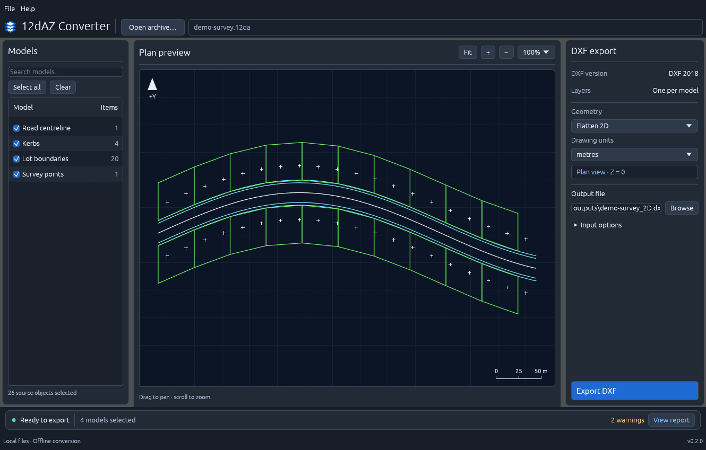
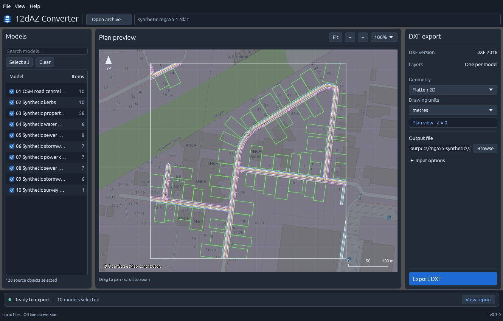
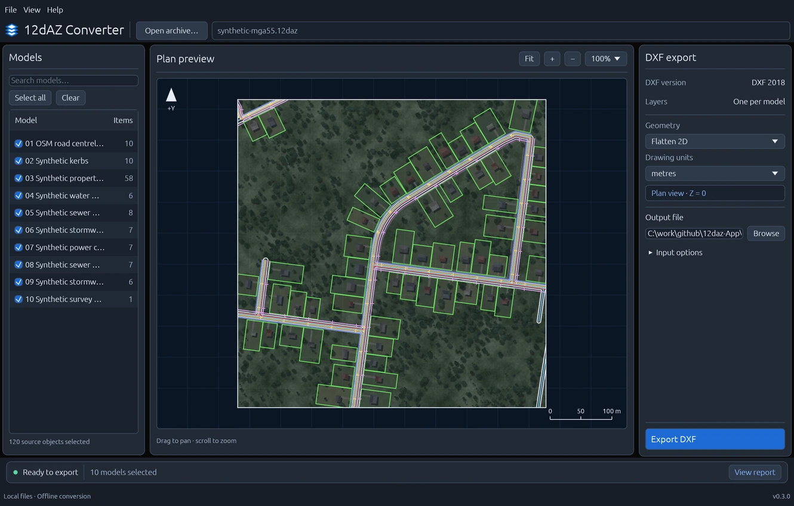

Choose your models
Open a .12daz archive or .12da file, review the plan preview and select the models you want to export. For dense models, the preview prioritizes bends, outlines and coverage across the drawing.
AI-generated scene · synthetic survey · illustrative interface
Turn your .12daz and .12da files into editable DXF 2018. Preview your models and choose Flatten 2D or Keep Z to preserve known elevations on supported geometry.

01 / THE TOOLKIT
Just the tools you need to move supported survey geometry into an editable drawing.
Open a .12daz archive or .12da file, review the plan preview and select the models you want to export. For dense models, the preview prioritizes bends, outlines and coverage across the drawing.
Flatten geometry to Z = 0 for a plan drawing, or use Keep Z for supported strings and alignments. Level circular arcs can remain exact.
Get DXF 2018 with one layer per model, plus a conversion report that explains omissions and style substitutions.
The desktop application converts files on your computer. No survey uploads, accounts or online conversion service.
02 / THE WORKFLOW
No 12d Model, AutoCAD or Python installation needed.
Download the Windows ZIP and extract the whole archive. Keep the extracted files together.
Run 12dAZ-Converter.exe and open your .12daz or
.12da file.
Explore the plan preview and select your models. Choose drawing units, an export mode and a DXF destination.
Export the DXF and review warnings. A
.dxf.conversion.json report is saved beside your
drawing.
Unit selection declares drawing units. It does not rescale your coordinates or transform the coordinate system.
03 / KNOW YOUR OUTPUT
Built for supported survey geometry. Always check the conversion report before using your drawing.
Straight and circular segments in supported super strings and legacy strings; XY arcs and circles; point strings; basic single-line world-size text; and supported super alignments. Flatten 2D also exports verified drainage pipe spans.
Keep Z preserves known elevations and can sample solved alignment grades and symmetric parabolas. For circular strings with changing elevations, enable Assume linear grade on arcs. The report records the assumption and the selected plan tolerance.
Drainage pipe elevations and original transition spiral reconstruction are pending. 4D strings and contours are deferred. TINs, meshes, symbols, rendered annotations and paper/screen-size text are unsupported. Civil attributes and alignment labels are omitted.
Objects containing unsupported curves are skipped whole. DWG export is future work.
Place your survey over a street map or satellite imagery. Open View → Background Map and adjust the map opacity to keep your linework easy to read.
Use OpenStreetMap Streets, Google Satellite with Labels, or Esri World Imagery with Labels. Google and Esri use your own API key. The app can load a key you save in Windows Credential Manager.
Assign the survey's MGA zone, datum and source units. For a local grid, align one control point for translation or two for scale and rotation. The map is a visual reference and DXF export preserves the source coordinates.
Conversion runs offline. When a map is enabled, its provider receives the visible map location.


The original Python releases used Tkinter for the desktop and ezdxf for export. The v0.1.5 preview is the reference for checking that the Rust port preserves conversion behaviour.
Starting with v0.2.0, the desktop and command-line tools share a Rust conversion engine. The desktop uses egui, and the engine uses acadrust to write DXF 2018. The original Python source remains available in the repository.
The Rust CLI completed the conversions 9.4–12.5× as fast and used 78–87% less peak memory across the two reference conversions below.
| Export mode | Python | Rust |
|---|---|---|
| Flatten 2D | 5.851 s 63.1 MiB | 0.620 s 13.9 MiB |
| Keep Z Linear arc grades | 9.281 s 154.9 MiB | 0.744 s 20.1 MiB |
Both CLIs ran on the same reference survey with the same export options on a Windows x64 PC with an Intel Core i9-13905H. Results vary by drawing and hardware. Read the benchmark method and results.
04 / GET STARTED
Download 12dAZ Converter for Windows.
Free to use.
MIT-licensed source.
Extract the complete ZIP, then run 12dAZ-Converter.exe.
The desktop requires an OpenGL 2.0 or newer graphics driver.
Finding it useful? Help support development.
Buy me coffee05 / A FEW DETAILS
No. The Windows download runs on its own and converts supported geometry locally.
Open View → Background Map to display OpenStreetMap, Google Satellite, or Esri imagery. Assign an MGA zone or align a local survey with control points. Read the release notes.
No. Conversion takes place locally in the desktop application. This website does not accept survey files.
Yes, for supported geometry in Keep Z mode. Valid zero and negative elevations are preserved. Flatten 2D sets the output elevations to zero. Check the report for objects skipped in Keep Z.
The current output is DXF 2018. DWG export is future work.
No. Selecting units declares the drawing units without rescaling coordinates. There is no automatic scaling or coordinate-system transformation.
Open an issue on GitHub with a description of the problem and relevant warnings. Do not post private survey files or sensitive project data.

12dAZ CONVERTER
If 12dAZ has helped with your next drawing, a cuppa is a lovely way to support its development.
Buy me a cuppaAlways optional. Thank you for your support.